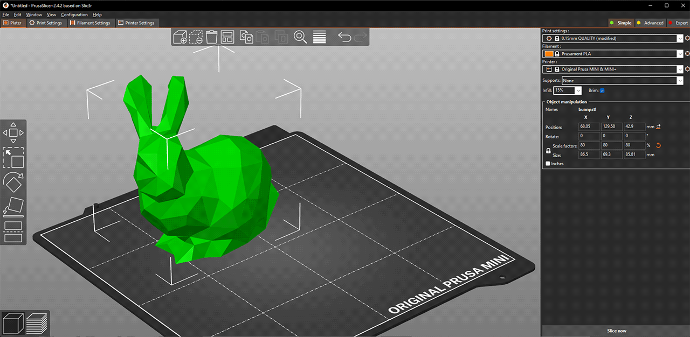

DexKit is a platform that allows students to learn about robotic hands, dexterous manipulation, and haptic technology through interactive experiences.
The DexKit interface allows users to explore robotic hand designs, control movements, and understand how engineers develop robotic systems.
Haptic devices provide touch-based feedback that allows users to experience interaction between humans and robotic systems.
First, you will begin with printing the components you will need to begin building. To do this you begin with the 3d printing software, PruscaSlicer, which is a free open source software that allows you to place components on a layout which can be organized to avoid improper building.